Word Economy
Maneiras de economizar energia e água.
Reduzir o consumo de água e energia elétrica não contribui apenas para a preservação do meio ambiente, mas também para a redução de gastos e o controle das finanças em casa. Algumas atitudes já são bem conhecidas, mas é sempre bom reforçar e descobrir maneiras novas de economizar. Pensando nisso, selecionamos 28 atitudes mais sustentáveis que você pode começar a adotar e que irão impactar diretamente nas contas da casa.
Na hora de adquirir um novo chuveiro, todas as especificações do produto devem ser observadas. Por exemplo, se a residência dispõe uma tensão de 127 volts, o chuveiro não pode exceder 5.700 watts. Caso a voltagem disponível seja 220 volts, o limite é 7.800 watts. Os disjuntores também devem corresponder às especificações de voltagens, 50 amperes para 127 volts e 40 amperes para 220, além da fiação de 10 milímetros em ambos os casos.
Micro-ondas, fornos elétricos, coifas e outros equipamentos de cozinha exigem tomadas de 20 amperes e fiação de pelo menos 4 mm. O secador e a prancha de cabelo também possuem alta potência e exigem bastante do sistema elétrico da residência. Por isso, para evitar o uso excessivo de energia, curtos e, até mesmo, incêndios, o proprietário deve plugá-los em tomadas de 20 amperes e instalação de fiação entre 4 e 6 mm.